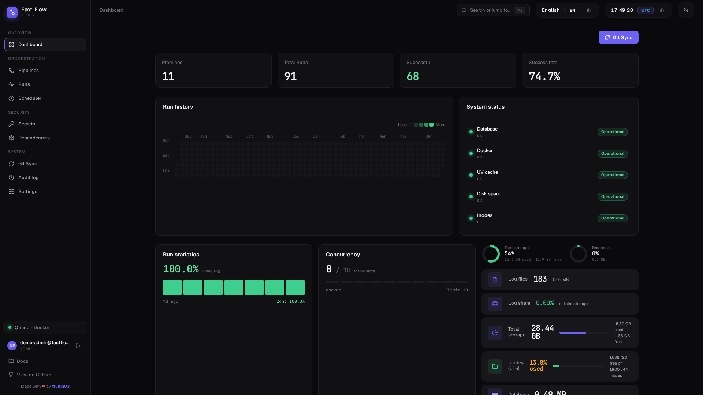

The lightweight orchestrator for people who just want to run a script.
Fast-Flow is a container-native, Python-centric ETL and task orchestrator. One main.py per pipeline —
no DAGs, no decorators, no image builds. git push → sync → run, isolated in a fresh
Docker container or Kubernetes Job every time.

Everything an orchestrator needs. Nothing it doesn't.
Fast-Flow trades the breadth of Airflow-style platforms for a radically simpler mental model — if it runs locally, it runs here.
Plain Python pipelines
A pipeline is just main.py. No @dag, no operators, no XComs — code that runs on your laptop runs here unmodified.
Zero-build deployment
No Docker image to build per pipeline. Change requirements.txt in Git — the orchestrator warms the cache automatically.
Strict isolation
Every run gets its own ephemeral Docker container or Kubernetes Job pod. A crash in one pipeline can never leak into another.
uv-powered JIT dependencies
A persistent uv cache and pre-installed Python versions mean dependencies resolve via hardlink in milliseconds, not minutes.
Live logs & metrics
Streaming stdout/stderr and CPU/RAM over SSE, whichever executor you use — Docker stats via socket proxy, or the Kubernetes Metrics API.
Secrets & RBAC-ready auth
Fernet-encrypted secrets, per-pipeline scoping, and OAuth via GitHub, Google, Microsoft Entra ID, or any custom OIDC provider.
Push to deploy. No build needed.
Your Git repository is the single source of truth. There's no upload button and no manual build step.
Develop
Write a normal Python script locally — requirements.txt and an optional pipeline.json alongside it.
git push
Push to your pipelines repository — the same one Fast-Flow watches, no CI pipeline required.
Auto sync
The orchestrator detects the change and pulls it atomically — pipelines never read half-written files.
Run, isolated
A fresh Docker container or Kubernetes Job starts via uv run --python. No image build, no waiting.
If it runs locally, it runs in Fast-Flow.
No proprietary decorators, no operator classes, no serialization rules. A pipeline is a directory with a main.py — that's the whole contract.
-
Automatic discovery — drop a folder with
main.pyin Git and it appears in the UI. -
Per-pipeline resource limits — CPU/RAM hard and soft limits via
pipeline.json. - Cron & interval scheduling, plus webhook triggers out of the box.
-
Selectable Python version per pipeline — 3.11, 3.12, whatever
uvsupports.
import os import requests def process_data(): api_key = os.getenv("API_KEY") data = fetch_data(api_key) save_result(transform(data)) def fetch_data(api_key): resp = requests.get( "https://api.example.com/data", headers={"Authorization": f"Bearer {api_key}"}, ) return resp.json() # no decorators. no DAG object. no orchestrator import. if __name__ == "__main__": process_data()
A modern, realtime dashboard
Built with React + TypeScript. Live run status, dependency & CVE checks, and full run history — no dated Airflow-style UI.
Deliberately narrow, on purpose
"I have a handful of Python scripts and Airflow is overkill." If that's you, this is the sweet spot.
| Feature | Fast-Flow | Airflow | Dagster | Prefect |
|---|---|---|---|---|
| Pipeline definition | 🟢 Plain Python (main.py) |
🔴 DAGs, operators, XComs | 🟡 Assets, ops, resources | 🟡 @flow/@task decorators |
| Setup | 🟢 Compose or K8s manifests | 🔴 Complex cluster | 🟡 Medium | 🟡 Server + workers |
| Isolation | 🟢 Container/Job per run | 🔴 Weak (shared worker) | 🟡 Medium | 🟡 Depends on worker type |
| Dependency speed | 🟢 Instant (uv JIT) | 🔴 Slow (image builds) | 🟡 Medium | 🟡 Env-dependent |
| Deployment | 🟢 Git push + auto-sync | 🔴 Complex CI/CD | 🟡 Code deployment | 🟡 Code deployment |
| Onboarding | 🟢 Minutes | 🔴 Weeks | 🟡 Days | 🟡 Days |
Need a large plugin catalog and event triggers? Try Kestra. Need data-asset lineage? Try Dagster. Need a richer Python engine? Try Prefect.
Running in about a minute
Docker Compose, a local dev setup, or Kubernetes — pick what fits.
# 1. Prepare your .env cp .env.example .env # 2. Generate an encryption key (required) python3 -c "from cryptography.fernet import Fernet; print(Fernet.generate_key().decode())" # → paste into .env as ENCRYPTION_KEY # 3. Start everything docker compose up -d # Open http://localhost:8000
python3 -m venv venv source venv/bin/activate pip install -r requirements.txt cp .env.example .env # set ENCRYPTION_KEY in .env # Terminal 1 — backend uvicorn app.main:app --reload # Terminal 2 — frontend cd frontend && npm run dev
kubectl apply -f k8s/pvc.yaml kubectl apply -f k8s/postgres.yaml # optional kubectl apply -f k8s/secrets.yaml kubectl apply -f k8s/configmap.yaml kubectl apply -f k8s/rbac-kubernetes-executor.yaml kubectl apply -f k8s/deployment.yaml kubectl apply -f k8s/service.yaml # port-forward to try it locally kubectl port-forward svc/fastflow-orchestrator 8000:80
Pipeline runs execute as Kubernetes Jobs — no Docker socket required on the cluster.